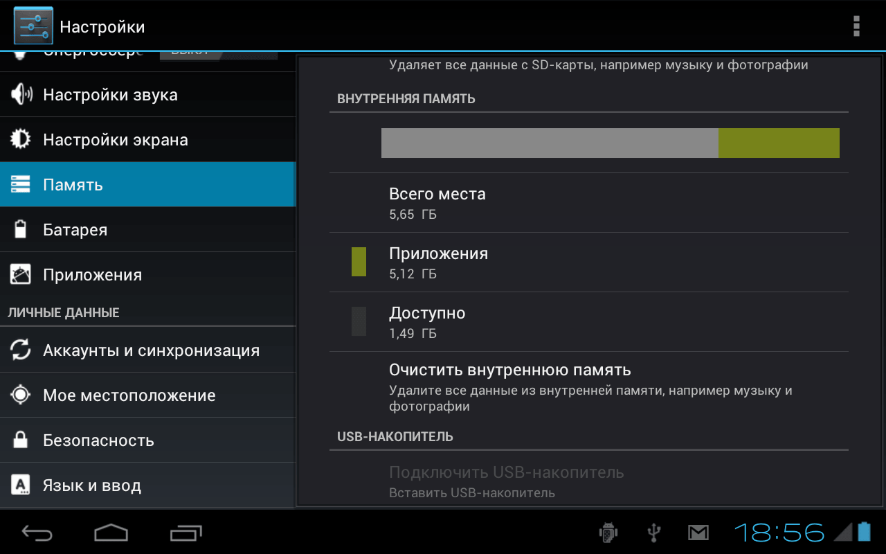

Как освободить память на устройствах Android?
Что делать, если Вы получаете раздражающие предупреждения «Недостаточно места на диске» при попытке загрузить новое приложение или медиа-файл?
Вариант 1. Очистка кэш-данных приложений
Это самый простой и быстрый способ очистки места в памяти телефона. Перед версией Android 4.2 для того, чтобы это осуществить, необходимо было открывать каждое приложение и удалять кэшируемые файлы, однако теперь это можно сделать, просто перейдя в раздел настроек, найти пункт «Кэшировать данные» и нажать «ОК». Это удалит всю историю и сохраненные настройки, например те места, которые Вы недавно искали в Google Maps, однако это действие может не только очистить место на диске, но и повысить производительность Ваших приложений. Иногда размер удаленных таким образом файлов составляет несколько гигабайтов, что не может не порадовать пользователя.
Вариант 2. Удалите фото и видео
По статистике именно медиа-файлы составляют большую часть всей памяти на мобильных устройствах, благодаря тому, что размер этих файлов достаточно велик. Нынешние технологии позволяют автоматически создавать копии фотографий на разнообразных облачных сервисах, таких как Dropbox, Google и многих других. Если не доверяете облачным сервисам, то можно просто копировать эти файлы на Ваш компьютер, а с мобильного устройства их удалить.
Вариант 3. Удалить некоторые из приложений
Скорее всего, в смартфоне или планшете существуют установленные приложения, которые Вы больше не используете. Найдите в настройках пункт «Программы» и пройдитесь по нему, решив, какие из приложений нужны, а которые можно абсолютно спокойно удалить.